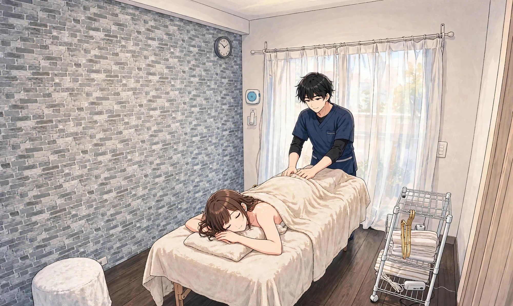
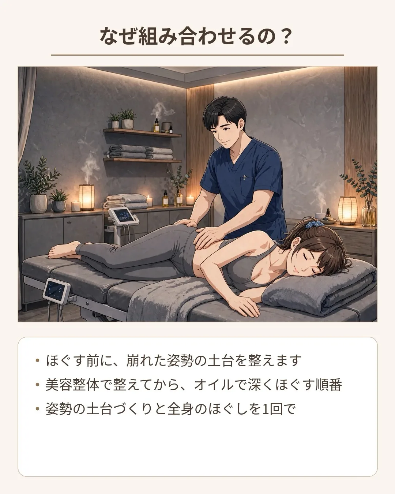

Oil Massage
オイルマッサージ
キャリアオイルを使い、全身を深い圧でゆったりとほぐすトリートメント。こりや張り、むくみ感、冷えなど、その日の状態に合わせて部位と圧を調整します。
- 背中・肩・首を中心とした深圧ケア
- 脚全体のむくみ感・重だるさケア
- 香りはアロマの系統からご相談できます
- シャワー設備のご利用については、ご利用施設により異なります。ご希望の場合はご予約時にお問い合わせください。
LINE公式アカウントでお問い合わせ
ご予約・お問い合わせはLINE公式アカウントへどうぞ
神戸・三ノ宮｜女性専用サロン
完全個室の女性専用サロン。東洋医学の知識を土台に、その日の体に合わせたオイルマッサージと美容整体を行います。

Check List
気になる項目を選ぶと、それぞれのお悩み専用ページで、考えられる背景や当店でのケア、自宅でできるセルフケアをご覧いただけます。
Menu & Price
メニューは2つだけ。どちらも90分・同料金です。お悩みに合わせて組み合わせもできます。

開院しました：ご予約はLINE公式アカウントから受け付けています。
Therapist
施術は、経歴を公開したセラピスト1名が最初から最後まで担当します。

平賀 伸人
ひらが のぶひと（男性セラピスト1名）
30YEARS OF EXPERIENCE
施術歴30年。鍼灸師としての東洋医学の知識を土台に、オイルマッサージと美容整体を組み合わせた施術を行います。当店では鍼灸施術は行いません。鍼やお灸を使わず、手技のみで体を整えます。
深く、しかし痛みを我慢させない圧の加減にこだわります。「強めが好き」「触れられたくない部位がある」など、ご希望は遠慮なくお伝えください。施術中いつでも調整します。
美容整体とオイルマッサージを組み合わせる理由や、姿勢チェックで見るポイント、初めての方へのご案内をカードにまとめました。



Care Guide — Symptom Pages
肩こり、首こり、脚のむくみ、冷え、猫背、巻き肩、目の疲れ、眠りの浅さ、生理前後の不調感、更年期のゆらぎなど、全42件のお悩みごとに独立したサブページをご用意しました。各ページでは、東洋医学から見た考え方、おすすめ施術、自宅でできるセルフケア、よくある質問を詳しく解説しています。
Blog
施術歴30年・鍼灸師の視点から、日々の体のケアに役立つ読み物をまとめました。本文は一般的な健康情報としてお読みください。強い症状が続く場合は、医療機関への受診をおすすめします。
Salon Info
| 店名 | ステラスピカ（Stella Spica） |
|---|---|
| エリア | 神戸市中央区琴ノ緒町2-3-5 ネオダイキョー三宮606号室（レンタルサロン） |
| アクセス | JR三ノ宮駅東口から徒歩5分／各線三宮駅から徒歩圏内 |
| 営業時間 | 月〜土 17:00〜22:00（日曜休み） |
| 予約 | 完全予約制／女性専用 |
| 設備 | 完全個室・タオル完備 シャワー設備のご利用については、ご利用施設により異なります。ご希望の場合はご予約時にお問い合わせください。 |
| 料金 | 90分 10,000円（税込） |
| 施術 | オイルマッサージ／美容整体（鍼灸施術は行いません） |
Sister Salon — Umeda, Osaka
大阪・梅田の姉妹店「ステラポラリス」。施術内容・料金・営業時間は同じです。大阪方面の方は梅田店、神戸方面の方は三ノ宮のステラスピカと、ご都合に合わせてお選びください。
※ シャワー設備のご利用については、ご利用施設により異なります。ご希望の場合はご予約時にお問い合わせください。
FAQ
初めての方の不安、持ち物・服装、お支払い、遅刻・キャンセル、アクセスについて、掲載情報の範囲でお答えします。
ご不安は自然なことだと思います。当店では、施術範囲の事前説明、施術部位以外へのタオル掛け、お着替え時の退室を徹底しています。性的なサービスは一切行いません。少しでも不安な点は、ご予約時にご相談ください。
月曜日〜土曜日17:00〜22:00（日曜休み）、完全予約制、女性専用です。代表料金は90分10,000円です。神戸・三ノ宮エリアのレンタルサロンで施術し、詳しい住所は予約確定後にご案内します。
神戸市中央区琴ノ緒町2-3-5 ネオダイキョー三宮606号室のレンタルサロンで施術します。各線三宮駅・三ノ宮駅から徒歩圏内です。
Booking
ご予約はLINE公式アカウントから受け付けています。ご予約は、LINE公式アカウントまたはSMSで受け付けています。下のフォームで予約メモを作ると、そのままLINEで送れます。
※ 予約ボタン先（LINE公式アカウント／SMS）の詳細は、予約確定のご連絡時にご案内する形を基本としています。お急ぎの方は、希望日時とお悩みをメモに明記ください。
当店の施術はリラクゼーションを目的としたもので、医療行為ではありません。症状の診断・治療については医療機関にご相談ください。痛みやしびれが強い場合、発熱時、飲酒後、妊娠中の方（時期による）は、施術をお断りする場合があります。
性的なサービスは一切行いません。そのような要求があった場合、施術を中止し、今後のご利用をお断りします。
当店では鍼灸施術は行いません。掲載している経絡・ツボ・東洋医学の内容は、一般的な考え方の紹介です。